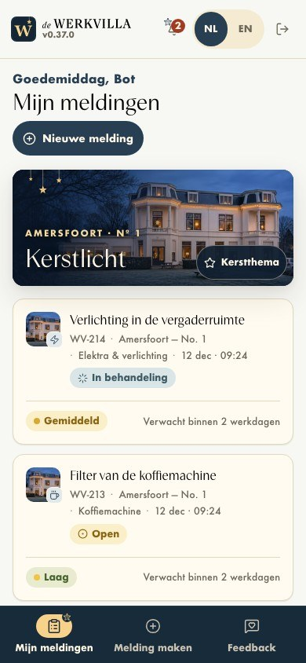
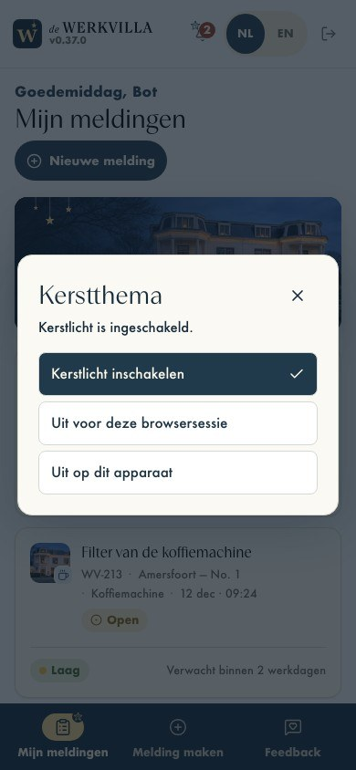
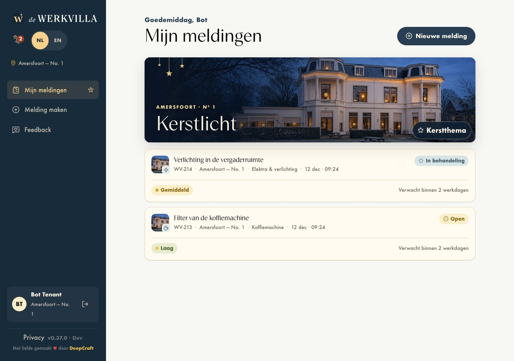
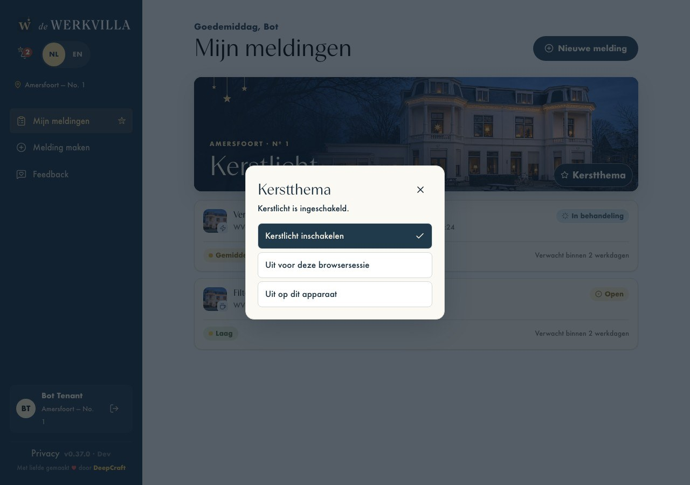

Holiday design 4 of 5
Kerstlicht (Dutch for “Christmas light”) shows each villa’s own photo as a winter evening scene. It is already built into the real app, and tenants can switch the theme off for one browser session or on their device.
These screenshots show the Dutch interface of the real app, with test data (a fictional test tenant, “Bot Tenant”, and made-up tickets).
Swipe for more, tap an image to open it full size.




A short screen recording of Kerstlicht, with the Dutch interface. About 20 seconds, no sound.